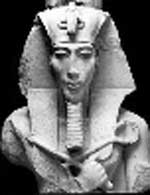

Antik dünyanın en tanınmış dini reformcuları arasında yer alan Mısırlı firavun Akhenaton, ülkesinin dini geleneklerini yenilemek için büyük bir çaba harcamıştır. Eski inançların kökünü kazıyarak güneş tanrısı Aton’un etrafında gelişen tek tanrılı bir inanç sistemini yerleştirmeye çalışmıştır.

MÖ 1350 yılında tahta çıkan Akhenaton, yaklaşık 38 yıl boyunca tahtta kalan firavun 3. Amenhotep’in oğluydu. Genç kral ilk önce 4. Amenhotep olarak anılsa da hükümdarlığının dördüncü yılında yeni bir din kurarak eski isminden vazgeçmiştir.
Akhenaton’dan önce Mısırlılar, Bereket tanrısı Osiris ve savaş tanrısı Horus gibi eski tapınak tanrılarına tapıyorlardı. Eski tanrıları reddeden Akhenaton bunlara tapılmasını yasakladı ve pek çok eski tapınağın yıkılmasını emretti.
Akhenaton bu yeni inanca samimiyetle bağlanmıştı. Diğer yandan yeni dinin çok önemli politik sonuçları da oldu. Rahiplerin geleneksel olarak sahip oldukları, tanrılar ve insanlar arasındaki aracılık rolünün ortadan kalkması ve Akhenaton’un sadece kendisinin Aton’la iletişim kurabileceğini iddia etmesi ruhban sınıfının gücünü azalttı. Böylelikle kendi otoritesi de güçlenmiş oldu. Egemenliğini pekiştirmek için çölün ortasında Akhetaten adını verdiği yeni bir şehir inşa ettirdi. Daha sonra Mısır’ın başkentini Teb’den buraya taşıdı.
Ne var ki nüfusun büyük çoğunluğu kralın on yedi yıllık hükümranlığı boyunca yeni dini tam olarak benimsemedi. Firavunun ölümünün ardından çocuk firavun Tutankhaten ruhban sınıfından gelen baskılara boyun eğerek eski tanrıları diriltti ve Teb’i yeniden başkent yaptı. Birkaç yıl içerisinde Mısırlılar Atenizmi tamamen reddettiler ve putkırıcı firavundan geriye kalan tüm eserleri imha ettiler.
Yine de Akhenaton günümüze kadar bir yenilikçi olarak anılmaya devam etmiştir. Yarattığı din ise pek çokları tarafından tek tanrılı dinlerin atası olarak kabul edilmektedir.
Ek Bilgiler
1- Akhenaton kendi isteği üzerine dönemin sanat eserlerinde kısa gövdeli, uzun kollu, uzun boyunlu ve uzun kafalı olarak resmedilmiştir. Bu ilginç durum, kimi uzmanların Akhenaton’un Marfan sendromu adı verilen bir genetik bozukluktan muzdarip olduğunu iddia etmesine sebep olmuştur.
2- Akhetaten, “Aten’in ufku” anlamına gelmektedir.
3- Atenizmin bırakılmasından sonra çocuk kral Tutankhaten “Aten’in Yaşayan İmajı” anlamına gelen isminden vazgeçti. Daha ziyade sonradan benimsediği “Tuhankhamen” ismi ile tanınmaktadır.